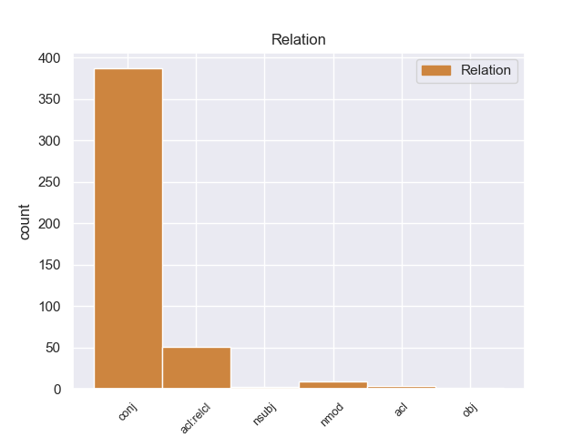
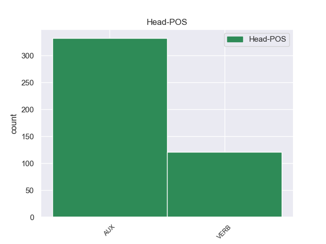
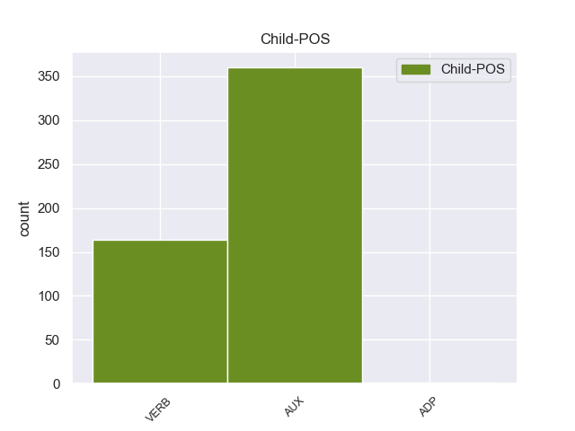

Distribution of features within this leaf



Agreement Rules sorted by frequency.
- When the dependent token is the conjunct(conj) of the head token,
1 पत्रिका _ _ _ _ 0 _ _ _
2 के _ _ _ _ 0 _ _ _
3 अनुसार _ _ _ _ 0 _ _ _
4 खान _ _ _ _ 0 _ _ _
5 की _ _ _ _ 0 _ _ _
6 इन _ _ _ _ 0 _ _ _
7 यात्राओं _ _ _ _ 0 _ _ _
8 का _ _ _ _ 0 _ _ _
9 उद्देश्य _ _ _ _ 0 _ _ _
10 अभी _ _ _ _ 0 _ _ _
11 तक _ _ _ _ 0 _ _ _
12 स्पष्ट _ _ _ _ 0 _ _ _
13 नहीं _ _ _ _ 0 _ _ _
14 है _ _ _ _ 0 _ _ _
15 , _ _ _ _ 0 _ _ _
16 लेकिन _ _ _ _ 0 _ _ _
17 खुफिया _ _ _ _ 0 _ _ _
18 अधिकारियों _ _ _ _ 0 _ _ _
19 का _ _ _ _ 0 _ _ _
20 मानना _ _ _ _ 0 _ _ _
21 है _ _ _ _ 0 _ _ _
22 कि _ _ _ _ 0 _ _ _
23 सऊदी _ _ _ _ 0 _ _ _
24 अरब _ _ _ _ 0 _ _ _
25 और _ _ _ _ 0 _ _ _
26 मिस्र _ _ _ _ 0 _ _ _
27 परमाणु _ _ _ _ 0 _ _ _
28 तक़नीक _ _ _ _ 0 _ _ _
29 की _ _ _ _ 0 _ _ _
30 तलाश _ _ _ _ 0 _ _ _
31 में _ _ _ _ 0 _ _ _
32 हैं है AUX VM Mood=Ind|Number=Plur|Person=3|Tense=Pres|VerbForm=Fin|Voice=Act 0 _ _ _
33 और _ _ _ _ 0 _ _ _
34 कई _ _ _ _ 0 _ _ _
35 अफ्रीकी _ _ _ _ 0 _ _ _
36 देश _ _ _ _ 0 _ _ _
37 कच्चे _ _ _ _ 0 _ _ _
38 यूरेनियम _ _ _ _ 0 _ _ _
39 संपन्न _ _ _ _ 0 _ _ _
40 हैं है AUX VM Mood=Ind|Number=Plur|Person=3|Tense=Pres|VerbForm=Fin|Voice=Act 32 conj _ ChunkId=VGF4|ChunkType=head|Stype=declarative|Tam=hE|Translit=haiṁ|Vib=है
41 । _ _ _ _ 0 _ _ _
1 रजत _ _ _ _ 0 _ _ _
2 जयंती _ _ _ _ 0 _ _ _
3 मनाने _ _ _ _ 0 _ _ _
4 वाले _ _ _ _ 0 _ _ _
5 और _ _ _ _ 0 _ _ _
6 राजनीतिक _ _ _ _ 0 _ _ _
7 प्रस्ताव _ _ _ _ 0 _ _ _
8 में _ _ _ _ 0 _ _ _
9 इस _ _ _ _ 0 _ _ _
10 बात _ _ _ _ 0 _ _ _
11 का _ _ _ _ 0 _ _ _
12 कोई _ _ _ _ 0 _ _ _
13 जिक्र _ _ _ _ 0 _ _ _
14 नहीं _ _ _ _ 0 _ _ _
15 है _ _ _ _ 0 _ _ _
16 कि _ _ _ _ 0 _ _ _
17 पार्टी _ _ _ _ 0 _ _ _
18 ने _ _ _ _ 0 _ _ _
19 पच्चीस _ _ _ _ 0 _ _ _
20 साल _ _ _ _ 0 _ _ _
21 पहले _ _ _ _ 0 _ _ _
22 जिस _ _ _ _ 0 _ _ _
23 रास्ते _ _ _ _ 0 _ _ _
24 पर _ _ _ _ 0 _ _ _
25 चलने _ _ _ _ 0 _ _ _
26 का _ _ _ _ 0 _ _ _
27 संकल्प _ _ _ _ 0 _ _ _
28 लिया _ _ _ _ 0 _ _ _
29 था _ _ _ _ 0 _ _ _
30 , _ _ _ _ 0 _ _ _
31 वह _ _ _ _ 0 _ _ _
32 रास्ता _ _ _ _ 0 _ _ _
33 क्या _ _ _ _ 0 _ _ _
34 वही _ _ _ _ 0 _ _ _
35 है है AUX VM Mood=Ind|Number=Sing|Person=3|Tense=Pres|VerbForm=Fin|Voice=Act 0 _ _ _
36 जिस _ _ _ _ 0 _ _ _
37 पर _ _ _ _ 0 _ _ _
38 वह _ _ _ _ 0 _ _ _
39 आज _ _ _ _ 0 _ _ _
40 खड़ी _ _ _ _ 0 _ _ _
41 है है AUX VM Mood=Ind|Number=Sing|Person=3|Tense=Pres|VerbForm=Fin|Voice=Act 35 acl:relcl _ ChunkId=VGF4|ChunkType=head|Stype=declarative|Tam=hE|Translit=hai|Vib=है
42 । _ _ _ _ 0 _ _ _
1 फार्मा _ _ _ _ 0 _ _ _
2 कंपनियों _ _ _ _ 0 _ _ _
3 के _ _ _ _ 0 _ _ _
4 शेयर _ _ _ _ 0 _ _ _
5 ऑल _ _ _ _ 0 _ _ _
6 टाइम _ _ _ _ 0 _ _ _
7 फेवरिट _ _ _ _ 0 _ _ _
8 हैं है AUX VM Mood=Ind|Number=Plur|Person=3|Tense=Pres|VerbForm=Fin|Voice=Act 0 _ _ _
9 , _ _ _ _ 0 _ _ _
10 कुछ _ _ _ _ 0 _ _ _
11 बैंकों _ _ _ _ 0 _ _ _
12 के _ _ _ _ 0 _ _ _
13 शेयर _ _ _ _ 0 _ _ _
14 अब _ _ _ _ 0 _ _ _
15 भी _ _ _ _ 0 _ _ _
16 अंडर _ _ _ _ 0 _ _ _
17 वैल्यूड _ _ _ _ 0 _ _ _
18 हैं है AUX VM Mood=Ind|Number=Plur|Person=3|Tense=Pres|VerbForm=Fin|Voice=Act 8 nmod _ ChunkId=VGF2|ChunkType=head|SpaceAfter=No|Stype=declarative|Tam=hE|Translit=haiṁ|Vib=है
19 , _ _ _ _ 0 _ _ _
20 आप _ _ _ _ 0 _ _ _
21 उनमें _ _ _ _ 0 _ _ _
22 निवेश _ _ _ _ 0 _ _ _
23 करके _ _ _ _ 0 _ _ _
24 मुनाफा _ _ _ _ 0 _ _ _
25 वसूल _ _ _ _ 0 _ _ _
26 सकते _ _ _ _ 0 _ _ _
27 हैं _ _ _ _ 0 _ _ _
28 । _ _ _ _ 0 _ _ _
1 इसके _ _ _ _ 0 _ _ _
2 बावजूद _ _ _ _ 0 _ _ _
3 जस्टिस _ _ _ _ 0 _ _ _
4 यू. _ _ _ _ 0 _ _ _
5 सी. _ _ _ _ 0 _ _ _
6 बनर्जी _ _ _ _ 0 _ _ _
7 की _ _ _ _ 0 _ _ _
8 अध्यक्षता _ _ _ _ 0 _ _ _
9 में _ _ _ _ 0 _ _ _
10 एक _ _ _ _ 0 _ _ _
11 उच्चस्तरीय _ _ _ _ 0 _ _ _
12 समिति _ _ _ _ 0 _ _ _
13 का _ _ _ _ 0 _ _ _
14 गठन _ _ _ _ 0 _ _ _
15 करना _ _ _ _ 0 _ _ _
16 और _ _ _ _ 0 _ _ _
17 उसे _ _ _ _ 0 _ _ _
18 इस _ _ _ _ 0 _ _ _
19 बात _ _ _ _ 0 _ _ _
20 का _ _ _ _ 0 _ _ _
21 पता _ _ _ _ 0 _ _ _
22 लगाने _ _ _ _ 0 _ _ _
23 के _ _ _ _ 0 _ _ _
24 लिए _ _ _ _ 0 _ _ _
25 कहना _ _ _ _ 0 _ _ _
26 है _ _ _ _ 0 _ _ _
27 कि _ _ _ _ 0 _ _ _
28 ( _ _ _ _ 0 _ _ _
29 साबरमती _ _ _ _ 0 _ _ _
30 एक्सप्रेस _ _ _ _ 0 _ _ _
31 के _ _ _ _ 0 _ _ _
32 कोच _ _ _ _ 0 _ _ _
33 संख्या _ _ _ _ 0 _ _ _
34 एस _ _ _ _ 0 _ _ _
35 - _ _ _ _ 0 _ _ _
36 ६ _ _ _ _ 0 _ _ _
37 में _ _ _ _ 0 _ _ _
38 भीड़ _ _ _ _ 0 _ _ _
39 क्यों _ _ _ _ 0 _ _ _
40 थी था AUX VM Gender=Fem|Mood=Ind|Number=Sing|Tense=Past|VerbForm=Fin|Voice=Act 69 nsubj _ ChunkId=VGF2|ChunkType=head|SpaceAfter=No|Stype=declarative|Tam=WA|Translit=thī|Vib=था
41 , _ _ _ _ 0 _ _ _
42 इनमें _ _ _ _ 0 _ _ _
43 से _ _ _ _ 0 _ _ _
44 अधिकांश _ _ _ _ 0 _ _ _
45 लोग _ _ _ _ 0 _ _ _
46 बेटिकट _ _ _ _ 0 _ _ _
47 क्यों _ _ _ _ 0 _ _ _
48 थे _ _ _ _ 0 _ _ _
49 , _ _ _ _ 0 _ _ _
50 और _ _ _ _ 0 _ _ _
51 इन _ _ _ _ 0 _ _ _
52 रेलयात्रियों _ _ _ _ 0 _ _ _
53 के _ _ _ _ 0 _ _ _
54 व्यवहार _ _ _ _ 0 _ _ _
55 ने _ _ _ _ 0 _ _ _
56 आग _ _ _ _ 0 _ _ _
57 की _ _ _ _ 0 _ _ _
58 घटना _ _ _ _ 0 _ _ _
59 को _ _ _ _ 0 _ _ _
60 किस _ _ _ _ 0 _ _ _
61 प्रकार _ _ _ _ 0 _ _ _
62 हवा _ _ _ _ 0 _ _ _
63 दी _ _ _ _ 0 _ _ _
64 ) _ _ _ _ 0 _ _ _
65 अपने _ _ _ _ 0 _ _ _
66 आप _ _ _ _ 0 _ _ _
67 में _ _ _ _ 0 _ _ _
68 शर्मनाक _ _ _ _ 0 _ _ _
69 है है AUX VM Mood=Ind|Number=Sing|Person=3|Tense=Pres|VerbForm=Fin|Voice=Act 0 _ _ _
70 । _ _ _ _ 0 _ _ _
1 मंत्रालय _ _ _ _ 0 _ _ _
2 के _ _ _ _ 0 _ _ _
3 एक _ _ _ _ 0 _ _ _
4 अधिकारी _ _ _ _ 0 _ _ _
5 के _ _ _ _ 0 _ _ _
6 मुताबिक _ _ _ _ 0 _ _ _
7 इस _ _ _ _ 0 _ _ _
8 बैठक _ _ _ _ 0 _ _ _
9 में _ _ _ _ 0 _ _ _
10 निदेशकों _ _ _ _ 0 _ _ _
11 से _ _ _ _ 0 _ _ _
12 यह _ _ _ _ 0 _ _ _
13 जानने _ _ _ _ 0 _ _ _
14 की _ _ _ _ 0 _ _ _
15 भी _ _ _ _ 0 _ _ _
16 कोशिश _ _ _ _ 0 _ _ _
17 होगी हो VERB VM Gender=Fem|Mood=Ind|Number=Sing|Person=3|Tense=Fut|VerbForm=Fin|Voice=Act 0 _ _ _
18 क्या _ _ _ _ 0 _ _ _
19 पिछले _ _ _ _ 0 _ _ _
20 दिनों _ _ _ _ 0 _ _ _
21 आईआईएम _ _ _ _ 0 _ _ _
22 , _ _ _ _ 0 _ _ _
23 बंगलोर _ _ _ _ 0 _ _ _
24 के _ _ _ _ 0 _ _ _
25 संबंध _ _ _ _ 0 _ _ _
26 में _ _ _ _ 0 _ _ _
27 लिए _ _ _ _ 0 _ _ _
28 गए _ _ _ _ 0 _ _ _
29 फैसले _ _ _ _ 0 _ _ _
30 से _ _ _ _ 0 _ _ _
31 उनकी _ _ _ _ 0 _ _ _
32 स्वायत्तता _ _ _ _ 0 _ _ _
33 को _ _ _ _ 0 _ _ _
34 ठेस _ _ _ _ 0 _ _ _
35 पहुंची _ _ _ _ 0 _ _ _
36 है है AUX VAUX Mood=Ind|Number=Sing|Person=3|Tense=Pres|VerbForm=Fin 17 acl _ ChunkId=VGF2|ChunkType=child|Tam=hE|Translit=hai|Vib=है
37 । _ _ _ _ 0 _ _ _
1 बताया _ _ _ _ 0 _ _ _
2 जाता _ _ _ _ 0 _ _ _
3 है है AUX VAUX Mood=Ind|Number=Sing|Person=3|Tense=Pres|VerbForm=Fin 0 _ _ _
4 इसमें _ _ _ _ 0 _ _ _
5 उनके _ _ _ _ 0 _ _ _
6 मंत्रिमंडल _ _ _ _ 0 _ _ _
7 के _ _ _ _ 0 _ _ _
8 सहयोगी _ _ _ _ 0 _ _ _
9 साथियों _ _ _ _ 0 _ _ _
10 की _ _ _ _ 0 _ _ _
11 खासी _ _ _ _ 0 _ _ _
12 अहम _ _ _ _ 0 _ _ _
13 भूमिका _ _ _ _ 0 _ _ _
14 है है AUX VM Mood=Ind|Number=Sing|Person=3|Tense=Pres|VerbForm=Fin|Voice=Act 3 obj _ ChunkId=VGF2|ChunkType=head|Stype=declarative|Tam=hE|Translit=hai|Vib=है
15 । _ _ _ _ 0 _ _ _
Disagree Examples:
1 मुख्यमंत्री _ _ _ _ 0 _ _ _
2 मोदी _ _ _ _ 0 _ _ _
3 को _ _ _ _ 0 _ _ _
4 हटाने _ _ _ _ 0 _ _ _
5 की _ _ _ _ 0 _ _ _
6 भारी _ _ _ _ 0 _ _ _
7 मुहिम _ _ _ _ 0 _ _ _
8 चल _ _ _ _ 0 _ _ _
9 रही _ _ _ _ 0 _ _ _
10 है है AUX VAUX Mood=Ind|Number=Sing|Person=3|Tense=Pres|VerbForm=Fin 0 _ _ _
11 और _ _ _ _ 0 _ _ _
12 उनके _ _ _ _ 0 _ _ _
13 विरोध _ _ _ _ 0 _ _ _
14 में _ _ _ _ 0 _ _ _
15 पूर्व _ _ _ _ 0 _ _ _
16 मुख्यमंत्री _ _ _ _ 0 _ _ _
17 सुरेश _ _ _ _ 0 _ _ _
18 मेहता _ _ _ _ 0 _ _ _
19 दिल्ली _ _ _ _ 0 _ _ _
20 तक _ _ _ _ 0 _ _ _
21 आ _ _ _ _ 0 _ _ _
22 पहुंचे पहुंच AUX VAUX Gender=Masc|Mood=Sub|Number=Sing|Person=3|Polite=Form|VerbForm=Fin 10 conj _ ChunkId=VGF2|ChunkType=child|SpaceAfter=No|Tam=eM|Translit=pahuṁce|Vib=एं
23 . _ _ _ _ 0 _ _ _
1 इलाहाबाद _ _ _ _ 0 _ _ _
2 हाईकोर्ट _ _ _ _ 0 _ _ _
3 में _ _ _ _ 0 _ _ _
4 इरफान _ _ _ _ 0 _ _ _
5 बेदार _ _ _ _ 0 _ _ _
6 नामक _ _ _ _ 0 _ _ _
7 व्यक्ति _ _ _ _ 0 _ _ _
8 ने _ _ _ _ 0 _ _ _
9 एक _ _ _ _ 0 _ _ _
10 याचिका _ _ _ _ 0 _ _ _
11 दायर _ _ _ _ 0 _ _ _
12 कर _ _ _ _ 0 _ _ _
13 कहा _ _ _ _ 0 _ _ _
14 था _ _ _ _ 0 _ _ _
15 कि _ _ _ _ 0 _ _ _
16 ताजमहल _ _ _ _ 0 _ _ _
17 एक _ _ _ _ 0 _ _ _
18 वक्फ _ _ _ _ 0 _ _ _
19 संपत्ति _ _ _ _ 0 _ _ _
20 है है AUX VM Mood=Ind|Number=Sing|Person=3|Tense=Pres|VerbForm=Fin|Voice=Act 0 _ _ _
21 और _ _ _ _ 0 _ _ _
22 उसे _ _ _ _ 0 _ _ _
23 इसका _ _ _ _ 0 _ _ _
24 मुतवल्ली _ _ _ _ 0 _ _ _
25 ( _ _ _ _ 0 _ _ _
26 केयरटेकर _ _ _ _ 0 _ _ _
27 ) _ _ _ _ 0 _ _ _
28 घोषित _ _ _ _ 0 _ _ _
29 किया _ _ _ _ 0 _ _ _
30 जाए जा AUX VAUX Mood=Sub|Number=Sing|Person=3|VerbForm=Fin 20 conj _ ChunkId=VGF3|ChunkType=child|Tam=eM|Translit=jāe|Vib=एं
31 । _ _ _ _ 0 _ _ _
1 यदि _ _ _ _ 0 _ _ _
2 इसे _ _ _ _ 0 _ _ _
3 नहीं _ _ _ _ 0 _ _ _
4 रोका _ _ _ _ 0 _ _ _
5 गया _ _ _ _ 0 _ _ _
6 , _ _ _ _ 0 _ _ _
7 तो _ _ _ _ 0 _ _ _
8 सोचिये सोच VERB VM Mood=Sub|Number=Sing|Person=2|Polite=Form|VerbForm=Fin|Voice=Act 0 _ _ _
9 हमारी _ _ _ _ 0 _ _ _
10 न्यायपालिका _ _ _ _ 0 _ _ _
11 का _ _ _ _ 0 _ _ _
12 स्तर _ _ _ _ 0 _ _ _
13 क्या _ _ _ _ 0 _ _ _
14 होगा हो VERB VM Gender=Masc|Mood=Ind|Number=Sing|Person=3|Tense=Fut|VerbForm=Fin|Voice=Act 8 acl _ ChunkId=VGF3|ChunkType=head|Stype=declarative|Tam=gA|Translit=hogā|Vib=गा
1 पर _ _ _ _ 0 _ _ _
2 इनमें _ _ _ _ 0 _ _ _
3 से _ _ _ _ 0 _ _ _
4 कोई _ _ _ _ 0 _ _ _
5 ऐसा _ _ _ _ 0 _ _ _
6 चेहरा _ _ _ _ 0 _ _ _
7 नहीं _ _ _ _ 0 _ _ _
8 है है AUX VM Mood=Ind|Number=Sing|Person=3|Tense=Pres|VerbForm=Fin|Voice=Act 0 _ _ _
9 , _ _ _ _ 0 _ _ _
10 जिसे _ _ _ _ 0 _ _ _
11 संपूर्ण _ _ _ _ 0 _ _ _
12 भारत _ _ _ _ 0 _ _ _
13 के _ _ _ _ 0 _ _ _
14 रूप _ _ _ _ 0 _ _ _
15 में _ _ _ _ 0 _ _ _
16 दुनिया _ _ _ _ 0 _ _ _
17 के _ _ _ _ 0 _ _ _
18 सामने _ _ _ _ 0 _ _ _
19 पेश _ _ _ _ 0 _ _ _
20 किया _ _ _ _ 0 _ _ _
21 जा _ _ _ _ 0 _ _ _
22 सके सक AUX VAUX Mood=Sub|Number=Sing|Person=3|VerbForm=Fin 8 acl:relcl _ ChunkId=VGF2|ChunkType=child|Tam=eM|Translit=sake|Vib=एं
23 । _ _ _ _ 0 _ _ _
1 मुख्य _ _ _ _ 0 _ _ _
2 न्यायाधीश _ _ _ _ 0 _ _ _
3 वाई. _ _ _ _ 0 _ _ _
4 के. _ _ _ _ 0 _ _ _
5 सब्बरवाल _ _ _ _ 0 _ _ _
6 , _ _ _ _ 0 _ _ _
7 जस्टिस _ _ _ _ 0 _ _ _
8 सी. _ _ _ _ 0 _ _ _
9 के. _ _ _ _ 0 _ _ _
10 ठक्कर _ _ _ _ 0 _ _ _
11 , _ _ _ _ 0 _ _ _
12 जस्टिस _ _ _ _ 0 _ _ _
13 आर. _ _ _ _ 0 _ _ _
14 वी. _ _ _ _ 0 _ _ _
15 रवींद्रन _ _ _ _ 0 _ _ _
16 और _ _ _ _ 0 _ _ _
17 जस्टिस _ _ _ _ 0 _ _ _
18 लोकेश्वर _ _ _ _ 0 _ _ _
19 सिंह _ _ _ _ 0 _ _ _
20 पांटा _ _ _ _ 0 _ _ _
21 की _ _ _ _ 0 _ _ _
22 खंडपीठ _ _ _ _ 0 _ _ _
23 ने _ _ _ _ 0 _ _ _
24 एक _ _ _ _ 0 _ _ _
25 स्वयंसेवी _ _ _ _ 0 _ _ _
26 संस्था _ _ _ _ 0 _ _ _
27 सोसाइटी _ _ _ _ 0 _ _ _
28 फॉर _ _ _ _ 0 _ _ _
29 सेफ _ _ _ _ 0 _ _ _
30 स्ट्रकचर _ _ _ _ 0 _ _ _
31 की _ _ _ _ 0 _ _ _
32 जनहित _ _ _ _ 0 _ _ _
33 याचिका _ _ _ _ 0 _ _ _
34 पर _ _ _ _ 0 _ _ _
35 विचार _ _ _ _ 0 _ _ _
36 करने _ _ _ _ 0 _ _ _
37 के _ _ _ _ 0 _ _ _
38 समय _ _ _ _ 0 _ _ _
39 केंद्र _ _ _ _ 0 _ _ _
40 सरकार _ _ _ _ 0 _ _ _
41 से _ _ _ _ 0 _ _ _
42 कहा _ _ _ _ 0 _ _ _
43 कि _ _ _ _ 0 _ _ _
44 दो _ _ _ _ 0 _ _ _
45 सप्ताह _ _ _ _ 0 _ _ _
46 में _ _ _ _ 0 _ _ _
47 विस्तृत _ _ _ _ 0 _ _ _
48 रिपोर्ट _ _ _ _ 0 _ _ _
49 शपथ _ _ _ _ 0 _ _ _
50 पर _ _ _ _ 0 _ _ _
51 पेश _ _ _ _ 0 _ _ _
52 करे कर VERB VM Mood=Sub|Number=Sing|Person=3|VerbForm=Fin|Voice=Act 0 _ _ _
53 और _ _ _ _ 0 _ _ _
54 चार _ _ _ _ 0 _ _ _
55 सप्ताह _ _ _ _ 0 _ _ _
56 बाद _ _ _ _ 0 _ _ _
57 याचिका _ _ _ _ 0 _ _ _
58 पर _ _ _ _ 0 _ _ _
59 सुनवाई _ _ _ _ 0 _ _ _
60 की _ _ _ _ 0 _ _ _
61 जाएगी जा AUX VAUX Gender=Fem|Mood=Ind|Number=Sing|Person=3|Tense=Fut|VerbForm=Fin 52 conj _ ChunkId=VGF3|ChunkType=child|Tam=gA|Translit=jāegī|Vib=गा
62 । _ _ _ _ 0 _ _ _